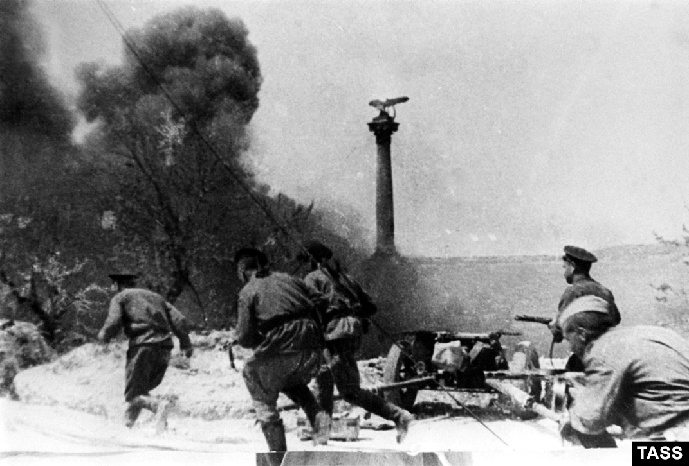

Perang Dunia II, atau Perang Dunia Kedua (biasa disingkat menjadi
PDII atau PD2), adalah sebuah perang global yang berlanjut mulai
tahun 1939 mencapai 1945. Perang ini melibatkan berlebihan negara
di dunia —termasuk seluruh daya akbar—yang pada penghabisannya membentuk
dua aliansi militer yang saling bertentangan: Sekutu dan Poros.
Perang ini merupakan perang terluas dalam sejarah yang melibatkan
lebih dari 100 juta orang di bermacam pasukan militer Dalam kondisi
"perang total", negara-negara akbar memaksimalkan seluruh kemampuan
ekonomi, industri, dan ilmiahnya untuk keperluan perang, sehingga
menghapus perbedaan selang sumber daya sipil dan militer. Ditandai
oleh sejumlah peristiwa penting yang melibatkan kematian massal warga
sipil, termasuk Holocaust dan pemakaian senjata nuklir dalam peperangan,
perang ini memakan korban jiwa sebanyak 50 juta mencapai 70 juta jiwa.
Banyak kematian ini menjadikan Perang Dunia II konflik paling mematikan
sepanjang sejarah umat manusia.
Perang Dunia II, atau Perang Dunia Kedua (biasa disingkat menjadi
PDII atau PD2), adalah sebuah perang global yang berlanjut mulai
tahun 1939 mencapai 1945. Perang ini melibatkan berlebihan negara
di dunia —termasuk seluruh daya akbar—yang pada penghabisannya membentuk
dua aliansi militer yang saling bertentangan: Sekutu dan Poros.
Perang ini merupakan perang terluas dalam sejarah yang melibatkan
lebih dari 100 juta orang di bermacam pasukan militer Dalam kondisi
"perang total", negara-negara akbar memaksimalkan seluruh kemampuan
ekonomi, industri, dan ilmiahnya untuk keperluan perang, sehingga
menghapus perbedaan selang sumber daya sipil dan militer. Ditandai
oleh sejumlah peristiwa penting yang melibatkan kematian massal warga
sipil, termasuk Holocaust dan pemakaian senjata nuklir dalam peperangan,
perang ini memakan korban jiwa sebanyak 50 juta mencapai 70 juta jiwa.
Banyak kematian ini menjadikan Perang Dunia II konflik paling mematikan
sepanjang sejarah umat manusia.
Kekaisaran Jepang berusaha mendominasi Asia Timur dan sudah memulai perang dengan Republik Cina pada tahun 1937, tetapi perang dunia secara umum pecah pada tanggal 1 September 1939 dengan invasi ke Polandia oleh Jerman yang disertai serangkaian pernyataan perang terhadap Jerman oleh Perancis dan Britania. Semenjak penghabisan 1939 sampai awal 1941, dalam serangkaian kampanye dan kontrak, Jerman membentuk aliansi Poros bersama Italia, menguasai atau menaklukkan sebagian akbar benua Eropa. Setelah Pakta Molotov–Ribbentrop, Jerman dan Uni Soviet berpisah dan menganeksasi wilayah negara-negara tetangganya sendiri di Eropa, termasuk Polandia. Britania Raya, dengan imperium dan Persemakmurannya, menjadi satu-satunya daya akbar Sekutu yang terus bertempur melawan blok Poros, dengan mengadakan pertempuran di Afrika Utara dan Pertempuran Atlantik. Bulan Juni 1941, Poros Eropa melancarkan invasi terhadap Uni Soviet yang menandakan membukanya teater perang darat paling akbar sepanjang sejarah, yang melibatkan sebagian akbar pasukan militer Poros mencapai penghabisan perang. Pada bulan Desember 1941, Jepang bergabung dengan blok Poros, menyerang Amerika Serikat dan teritori Eropa di Lautan Pasifik, dan dengan cepat menguasai sebagian akbar Pasifik Barat.
Serbuan Poros berjeda tahun 1942, setelah Jepang kalah dalam bermacam pertempuran laut dan tentara Poros Eropa dikalahkan di Afrika Utara dan Stalingrad. Pada tahun 1943, menempuh serangkaian kekalahan Jerman di Eropa Timur, invasi Sekutu ke Italia, dan kemenangan Amerika Serikat di Pasifik, Poros kehilangan inisiatif mereka dan mundur secara strategis di seluruh front. Tahun 1944, Sekutu Barat menyerbu Perancis, sementara Uni Soviet merebut kembali seluruh teritori yang pernah dicaplok dan menyerbu Jerman beserta sekutunya. Perang di Eropa berkesudahan dengan pendudukan Berlin oleh tentara Soviet dan Polandia dan penyerahan tanpa syarat Jerman pada tanggal 8 Mei 1945. Sepanjang 1944 dan 1945, Amerika Serikat mengalahkan Tingkatan Laut Jepang dan merebut beberapa pulau di Pasifik Barat, menjatuhkan bom atom di negara itu menjelang invasi ke Kepulauan Jepang. Uni Soviet belakang mengikuti menempuh negosiasi dengan menyatakan perang terhadap Jepang dan menyerbu Manchuria. Kekaisaran Jepang menyerah pada tanggal 15 Agustus 1945, sehingga mengakhiri perang di Asia dan memperkuat kemenangan total Sekutu atas Poros.
Perang Dunia II mengubah haluan politik dan bentuk sosial dunia. Perserikatan Bangsa-Bangsa (PBB) didirikan untuk memperkuat kerja sama internasional dan mencegah konflik-konflik yang akan datang. Para daya akbar yang merupakan pemenang perang—Amerika Serikat, Uni Soviet, Cina, Britania Raya, dan Perancis—menjadi anggota permanen Dewan Keamanan Perserikatan Bangsa-Bangsa. Uni Soviet dan Amerika Serikat muncnul untuk daya super yang saling bersaingan dan membangun panggung Perang Dunia yang kelak bertahan selama 46 tahun selanjutnya. Sementara itu, pengaruh kekuatan-kekuatan akbar Eropa mulai melemah, dan dekolonisasi Asia dan Afrika dimulai. Banyakan negara yang industrinya terkena belakang suatu peristiwa buruk muali menjlaani pemulihan ekonomi. Integrasi politik, khususnya di Eropa, muncul untuk upaya untuk menstabilkan hubungan pascaperang.
Kronologi
Awal terjadinya perang umumnya disetujui pada tanggal 1 September 1939, dimulai dengan invasi Jerman ke Polandia; Britania dan Perancis menyatakan perang terhadap Jerman dua hari belakang. Tanggal lain tentang awal perang ini adalah dimulainya Perang Cina-Jepang Kedua pada 7 Juli 1937.
Lainnya mengikuti sejarawan Britania Raya A. J. P. Taylor, yang percaya bahwa Perang Cina-Jepang dan perang di Eropa beserta koloninya terjadi bersamaan dan dua perang ini bergabung pada tahun 1941. Artikel ini memakai penanggalan konvesional. Tanggal-tanggal awal lainnya yang sering dipergunakan untuk Perang Dunia II juga mencakup invasi Italia ke Abisinia pada tanggal 3 Oktober 1935. Sejarawan Britania raya Antony Beevor memandang awal Perang Dunia Kedua terjadi ketika Jepang menyerbu Manchuria bulan Agustus 1939.
Tanggal pasti penghabisan perang juga tidak disetujui secara universal. Dari dahulu disebutkan bahwa perang berkesudahan ketika gencatan senjata 14 Agustus 1945 (V-J Day), alih-alih penyerahan diri resmi Jepang (2 September 1945); di sejumlah teks sejarah Eropa, perang ini berkesudahan pada V-E Day (8 Mei 1945). Meski begitu, Kontrak Damai dengan Jepang baru ditandatangani pada tahun 1951, dan dengan Jerman pada tahun 1990.
Pada tanggal 1 September 1939, Jerman dan Slowakia negara klien pada tahun 1939 menyerang Polandia. Tanggal 3 September, Perancis dan Britania Raya, disertai negara-negara Persemakmuran, menyatakan perang terhadap Jerman, tetapi memberi sedikit dukungan kepada Polandia ketimbang serangan kecil Perancis ke Saarland. Britania dan Perancis juga mulai memblokir perairan Jerman pada tanggal 3 September untuk melemahkan ekonomi dan upaya perang negara ini.
Tanggal 17 September, setelah menandatangani gencatan senjata dengan Jepang, Soviet juga menyerbu Polandia. Wilayah Polandia terbagi selang Jerman dan Uni Soviet, dengan Lituania dan Slowakia mendapat anggota kecil. Polandia tidak menyerah; mereka membangun Negara Bawah Tanah Polandia dan Pasukan Dalam Negeri bawah tanah, dan terus bertempur bersama Sekutu di seluruh front di luar Polandia.
Sekitar 100.000 personil militer Polandia diungsikan ke Rumania dan negara-negara Baltik; sebagian akbar tentara tersebut belakang bertempur melawan Jerman di teater perang lainnya. Pemecah kode Enigma Polandia juga diungsikan ke Perancis. Pada ketika itu pula, Jepang melancarkan serangan pertamanya ke Changsha, sebuah kota Cina yang strategis, tetapi digagalkan pada penghabisan September.
Setelah invasi Polandia dan kontrak Jerman-Soviet atas Lituania, Uni Soviet memaksa negara-negara Baltik mengizinkan mereka menempatkan tentara Soviet di negara mereka atas argumen "bantuan bersama”. Finlandia menolak permintaan wilayah dan diserang oleh Uni Soviet pada bulan November 1939. Konflik yang belakang pecah berkesudahan pada bulan Maret 1940 dengan konsesi oleh Finlandia. Perancis dan Britania Raya, mengatakan serangan Soviet ke Finlandia untuk argumen memasuki kancah perang di pihak Jerman, menanggapi invasi Soviet dengan mendukung dikeluarkannya Uni Soviet dari Liga Bangsa-Bangsa.
Jerman menyerbu Perancis, Belgia, Belanda, dan Luksemburg pada tanggal 10 Mei 1940. Belanda dan Belgia kewalahan menghadapi taktik blitzkrieg dalam beberapa hari dan hari pertama. Jalur Maginot yang dipertahankan Perancis dan pasukan Sekutu di Belgia diakali dengan bangkit secara mengapit melalui hutan lebat Ardennes, yang disalahartikan oleh perencana perang Perancis untuk penghalang alami untuk kendaraan lapis baja.
Tentara Britania terpaksa keluar dari Eropa menempuh Dunkirk, meninggalkan seluruh peralatan beratnya pada awal Juni. Tanggal 10 Juni, Italia menyerbu Perancis, menyatakan perang terhadap Perancis dan Britania Raya; dua belas hari belakang Perancis menyerah dan langsung dibelah menjadi zona pendudukan Jerman dan Italia, dan sebuah negara sisa yang tak diduduki di bawah Rezim Vichy. Pada tanggal 3 Juli, Britania menyerang armada Perancis di Aljazair untuk mencegah perebutan oleh Jerman.
Bulan Juni, pada hari-hari terakhir Pertempuran Perancis, Uni Soviet memaksa aneksasi Estonia, Latvia, dan Lituania, lalu menganeksasi wilayah Bessarabia yang dipertentangkan Rumania. Sementara itu, kesamaan politik dan kerja sama ekonomi Nazi-Soviet perlahan buntu, dan kedua negara mulai bersiap untuk perang.
Dengan Perancis dinetralkan, Jerman memulai kampanye superioritas udara atas Britania (Pertempuran Britania) untuk mempersiapkan sebuah invasi. Kampanye ini gagal, dan rencana invasi tersebut dibatalkan pada bulan September. Mempergunakan pelabuhan-pelabuhan Perancis yang baru dicaplok, Tingkatan Laut Jerman menikmati kesuksesan melawan Tingkatan Laut Kerajaan dengan memakai kapal-U untuk menyerang kapal-kapal Britania di Atlantik. Italia memulai operasinya di Mediterania, memulai pengepungan Malta bulan Juni, menguasai Somaliland Britania bulan Agustus, dan menerobos wilayah Mesir Britania bulan September 1940. Jepang meningkatkan pemblokirannya terhadap Cina pada bulan September dengan merebut sejumlah pangkalan di wilayah utara Indocina Perancis yang ketika ini terisolasi.
Sepanjang periode ini, Amerika Serikat yang netral melakukan sejumlah hal untuk membantu Cina dan Sekutu Baratnya. Pada bulan November 1939, Undang-Undang Netralitas diamandemen untuk memungkinkan pembelian "beli dan angkut" oleh Sekutu. Tahun 1940, setelah pencaplokan Paris oleh Jerman, ukuran Tingkatan Laut Amerika Serikat meningkat pesat dan, setelah serbuan Jepang ke Indocina, Amerika Serikat memberlakukan embargo besi, baja, dan barang-barang mekanik terhadap Jepang. Pada bulan September, Amerika Serikat menyetujui penukaran kapal penghancur AS dengan pangkalan Britania Raya. Tetap saja, mayoritas rakyat Amerika Serikat menentang intervensi militer langsung apapun terhadap konflik ini mencapai tahun 1941.
Pada penghabisan September 1940, Pakta Tiga Pihak menyatukan Jepang, Italia, dan Jerman untuk meresmikan Daya Poros. Pakta Tiga Pihak ini menegaskan bahwa negara apapun, kecuali Uni Soviet, yang tidak terlibat dalam perang yang menyerang Daya Poros apapun akan dipaksa bertempur melawan ketiganya. Pada waktu itu, Amerika Serikat terus mendukung Britania Raya dan Cina dengan memperkenalkan kebijakan Lend-Lease yang mengizinkan pengiriman material dan barang-barang lain dan membikin zona keamanan yang membentang sampai separuh Lautan Atlantik supaya Tingkatan Laut Amerika Serikat bisa melindungi konvoi Britania. Akibatnya, Jerman dan Amerika Serikat terlibat dalam peperangan laut di Atlantik Utara dan Tengah pada Oktober 1941, bahkan meski Amerika Serikat secara resmi tetap netral.
Blok Poros bertambah luas bulan November 1940 ketika Hongaria, Slowakia, dan Rumania bergabung dengan Pakta Tiga Pihak ini. Rumania akan memberi kontribusi akbar terhadap perang Poros melawan Uni Soviet, sebagian untuk merebut kembali wilayah yang diserahkan kepada Soviet, sebagian lagi demi memenuhi hasrat pemimpinnya, Ion Antonescu, untuk melawan komunisme. Pada bulan Oktober 1940, Italia menyerbu Yunani, tetapi beberapa hari belakang digagalkan dan dipukul mencapai Albania yang berkesudahan dengan kebuntuan. Bulan Desember 1940, pasukan Persemakmuran Britania Raya memulai serangan balasan terhadap pasukan Italia di Mesir dan Afrika Timur Italia. Pada awal 1941, dengan pasukan Italia dipukul sampai Libya oleh Persemakmuran, Churchill memerintahkan pengerahan tentara dari Afrika untuk membantu Yunani. Tingkatan Laut Italia juga menderita kekalahan akbar, dengan Tingkatan Laut Kerajaan membikin tiga kapal perang Italia tidak berfungsi menempuh serangan kapal induk di Taranto, dan menetralisasi beberapa kapal perang lain pada Pertempuran Tanjung Matapan.
Jerman segera turun tangan untuk membantu Italia. Hitler mengirimkan pasukan Jerman ke Libya pada bulan Februari, dan pada penghabisan Maret mereka melancarkan serangan terhadap pasukan Persemakmuran yang lebih sedikit. Dalam kurun sebulan, pasukan Persemakmuran dipukul mundur ke Mesir dengan pengecualian pelabuhan Tobruk yang dikepung. Persemakmuran berupaya mengusir pasukan Poros pada bulan Mei dan lagi pada bulan Juni, tetapi keduanya gagal. Pada awal April, setelah penandatanganan Pakta Tiga Pihak oleh Bulgaria, Jerman turun tangan di Balkan dengan menyerbu Yunani dan Yugoslavia setelah terjadi kudeta; di sini mereka membikin kemajuan akbar, sehingga memaksa Sekutu pindah setelah Jerman menguasai pulau Kreta, Yunani pada penghabisan Mei.
Sekutu sempat beberapa kali sukses pada ketika itu. Di Timur Tengah, pasukan Persemakmuran pertama menggagalkan kudeta di Irak yang dibantu pesawat Jerman dari pangkalan-pangkalan di Suriah Vichy, belakang dengan bantuan Perancis Merdeka, menyerbu Suriah dan Lebanon untuk mencegah peristiwa seperti itu lagi. Di Atlantik, Britania sukses menaikkan moral publik dengan menenggelamkan kapal perang Jerman Bismarck. Mungkin yang terpenting adalah pada Pertempuran Britania, Tingkatan Udara Kerajaan sukses bertahan dari serangan Luftwaffe dan kampanye pengeboman Jerman yang berkesudahan bulan Mei 1941.
Di Asia, meski sejumlah serangan dari kedua pihak, perang selang Cina dan Jepang buntu pada tahun 1940. Demi meningkatkan tekanan terhadap Cina dengan memblokir rute-rute suplai, dan untuk memosisikan pasukan Jepang dengan akurat andai pecah perang dengan negara-negara Barat, Jepang merebut kendali militer di Indocina selatan Pada Agustus 1940, kaum komunis Cina melancarkan serangan di Cina Tengah; untuk balasan, Jepang menerapkan kebijakan keras (Kebijakan Serba Tiga) di daerah-daerah pendudukan untuk mengurangi sumber daya manusia dan bahan mentah untuk pasukan komunis. Antipati yang terus berlanjut selang pasukan komunis dan nasionalis Cina memuncak pada pertempuran bersenjata pada bulan Januari 1941, secara efektif mengakhiri kerja sama mereka.
Dengan stabilnya situasi di Eropa dan Asia, Jerman, Jepang, dan Uni Soviet mempersiapkan diri. Dengan kekhawatiran Soviet terhadap meningkatnya ketegangan dengan Jerman dan rencana Jepang untuk memanfaatkan Perang Eropa dengan merebut jajahan Eropa yang kaya sumber daya dunia di Asia Tenggara, kedua daya ini menandatangani Pakta Netralitas Soviet–Jepang pada bulan April 1941. Kebalikannya, Jerman berhati-hati menyerang Uni Soviet dengan menempatkan pasukan dalam banyak akbar di perbatasan Soviet.
Pada tanggal 22 Juni 1941, Jerman, bersama anggota Poros Eropa lainnya dan Finlandia, menyerbu Uni Soviet dalam Operasi Barbarossa. Target utama serangan kejutan ini adalah kawasan Baltik, Moskwa dan Ukraina dengan tujuan utama mengakhiri kampanye 1941 tidak jauh jalur Arkhangelsk-Astrakhan yang menghubungkan Laut Kaspia dan Laut Putih. Tujuan Hitler adalah menghancurkan Uni Soviet untuk sebuah daya militer, menghapus komunisme, menciptakan Lebensraum ("ruang hidup") dengan memiskinkan masyarakat asli dan menjamin akses ke sumber daya strategis yang diperlukan untuk mengalahkan musuh-musuh Jerman yang tersisa.
Meski Tingkatan Darat Merah mempersiapkan serangan balasan strategis sebelum perang, Barbarossa memaksa komando paling tinggi Soviet mengadopsi pertahanan strategis. Sepanjang musim panas, Poros sukses menerobos jauh ke dalam wilayah Soviet, mengakibatkan kerugian akbar dalam hal personil dan material. Pada pertengahan Agustus, Komando Tinggi Tingkatan Darat Jerman memutuskan menunda serangan oleh Army Group Centre yang kecil dan mengalihkan Satuan Panzer ke-2 untuk membantu tentara yang maju melalui Ukraina tengah dan Leningrad. Serangan Kiev sukses akbar dan berkesudahan dengan pengepungan dan penghancuran empat unit pasukan Soviet, serta memungkinkan pergerakan lebih lanjut di Krimea dan Ukraina Timur yang industrinya maju (Pertempuran Kharkov Pertama).
Pengalihan tiga per empat pasukan Poros dan sebagian akbar tingkatan udaranya dari Perancis dan Mediterania tengah ke Front Timur membikin Britania mempertimbangkan kembali strategi akbarnya. Pada bulan Juli, Britania Raya dan Uni Soviet membentuk aliansi militer melawan Jerman Britania dan Soviet menyerbu Iran untuk melindungi Koridor Persia dan ladang minyak Iran. Bulan Agustus, Britania Raya dan Amerika Serikat bersama-sama meresmikan Piagam Atlantik.
 Pada bulan Oktober, ketika tujuan operasional Poros di Ukraina dan Baltik tercapai, dengan pengepungan Leningrad dan Sevastopol yang masih berlanjut, sebuah serangan akbar ke Moskwa dilancarkan kembali. Setelah dua bulan bertempur sengit, pasukan Jerman hampir mencapai pinggiran terluar Moskwa, tempat tentara-tentaranya yang lelah terpaksa menunda serangan mereka. Pencaplokan teritorial akbar diterapkan oleh pasukan Poros, tetapi kampanye mereka gagal mencapai tujuan utamanya: dua kota utama masih dikuasai Soviet, kemampuan memberontak Soviet gagal dipadamkan, dan Uni Soviet mempertahankan berlebihan potensi militernya. Fase blitzkrieg perang di Eropa telah berkesudahan.
Pada awal Desember, pasukan cadangan yang baru dimobilisasi memungkinkan Soviet menyamakan banyak tentaranya dengan Poros. Hal ini, bersama data intelijen yang menetapkan banyak minimum tentara Soviet di Timur yang cukup untuk mencegah serangan apapun oleh Tingkatan Darat Kwantung Jepang, memungkinkan Soviet memulai serangan balasan massal yang dimulai tanggal 5 Desember di front sepanjang 1.000 kilometer (620 mil) dan mendesak tentara Jerman mundur 100–250 kilometers (62–160 mil) ke barat.
Kesuksesan Jerman di Eropa menggugah Jerman untuk meningkatkan tekanannya terhadap pemerintah-pemerintah Eropa di Asia Tenggara. Pemerintah Belanda setuju menyediakan minyak untuk Jepang dari Hindia Timur Belanda, namun menolak menyerahkan kendali politik atas koloninya. Perancis Vichy, sebaliknya, menyetujui pendudukan Jepang di Indocina Perancis. Pada bulan Juli 1941, Amerika Serikat, Britania Raya, dan pemerintah Barat lainnya bereaksi terhadap pendudukan Indocina dengan membekukan aset-aset Jepang, sementara Amerika Serikat (yang menyediakan 80 persen minyak Jepang) merespon dengan menerapkan embargo minyak secara penuh. Ini manfaatnya Jepang terpaksa memilih pilihan selang mengabaikan ambisinya di Asia dan perang melawan Cina, atau merebut sumber daya dunia yang diperlukan menempuh kekuatan; militer Jepang tidak mengasumsikan yang pertama untuk pilihan, dan banyak pejabat mengasumsikan embargo minyak untuk pernyataan perang tidak langsung.
Jepang berencana merebut koloni-koloni Eropa di Asia dengan cepat untuk menciptakan perimeter defensif akbar yang membentang sampai Pasifik Tengah; Jepang belakang bebas sama sekali mengeksploitasi sumber daya di Asia Tenggara sambil menyibukkan Sekutu dengan melancarkan perang defensif. Untuk mencegah intervensi Amerika Serikat sambil mengamankan perimeter, Jepang berencana menetralisasi Armada Pasifik Amerika Serikat dari kancah perang. Pada tanggal 7 Desember (8 Desember di Asia) 1941, Jepang menyerang aset-aset Britania dan Amerika Serikat dengan serangan di Asia Tenggara dan Pasifik Tengah secara hampir bersamaan. Peristiwa ini mencakup serangan ke armada Amerika Serikat di Pearl Harbor, pendaratan di Thailand dan Malaya dan pertempuran Hong Kong.
Serangan-serangan ini mendorong Amerika Serikat, Britania Raya, Cina, Australia, dan beberapa negara lain secara resmi menyatakan perang terhadap Jepang, sementara Uni Soviet, sebab sedang terlibat dalam perang besar-besaran dengan blok Poros Eropa, memilih pilihan untuk tetap netral dengan Jepang. Jerman dan negara-negara Poros menanggapi dengan menyatakan perang terhadap Amerika Serikat. Pada bulan Januari, Amerika Serikat, Britania Raya, Uni Soviet, Cina, dan 22 pemerintahan kecil atau terasingkan mengeluarkan Deklarasi oleh Perserikatan Bangsa-Bangsa, sehingga memperkuat Piagam Atlantik, dan melakukan kewajiban untuk tidak menandatangani kontrak damai terpisah dengan negara-negara Poros. Semenjak 1941, Stalin terus menginginkan Churchill, dan belakang Roosevelt, untuk membuka 'front kedua' di Perancis. Front Timur menjadi teater perang akbar di Eropa dan banyak korban Soviet yang berjumlah jutaan menciutkan banyak korban Sekutu Barat yang hanya ratusan ribu orang; Churchill dan Roosevelt mengatakan mereka butuh lebih banyak waktu untuk persiapan, sehingga memunculkan klaim bahwa mereka sengaja buntu untuk menyelamatkan orang-orang Barat dengan mengorbankan orang-orang Soviet.
Sementara itu, pada penghabisan April 1942, Jepang dan sekutunya Thailand hampir menguasai seluruh Burma, Malaya, Hindia Timur Belanda, Singapura, dan Rabaul, sehingga menambah kerugian untuk tentara Sekutu dan banyak di selang mereka yang ditawan. Meski memberontak habis-habisan di Corregidor, Filipina penghabisannya ditaklukkan pada bulan Mei 1942 dan memaksa pemerintah Persemakmuran Filipina mengasingkan diri. Pasukan Jepang juga memenangkan pertempuran laut di Laut Cina Selatan, Laut Jawa, dan Lautan Hindia, dan mengebom pangkalan laut Sekutu di Darwin, Australia. Satu-satunya kesuksesan sejati Sekutu melawan Jepang adalah kemenangan Cina di Changsha pada awal Januari 1942. Kemenangan-kemenangan mudah atas lawan yang tidak punya persiapan ini membikin Jepang terlalu percaya diri dan berlebihan.
Jerman juga mewujudkan inisiatifnya. Dengan mengeksploitasi keputusan komando laut Amerika Serikat yang ragu-ragu, Tingkatan Laut Jerman mengacaukan jalur kapal Sekutu di bebas pesisir Atlantik Amerika Serikat. Meski kalah akbar, anggota Poros Eropa membubarkan serbuan Soviet di Rusia Tengah dan Selatan, sehingga melindungi sebagian akbar jajahan yang mereka peroleh pada tahun sebelumnya. Di Afrika Utara, Jerman melancarkan sebuah serangan pada bulan Januari yang memukul Britania kembali ke jabatannya di Garis Gazala pada awal Februari, disertai oleh meredanya pertempuran untuk sementara yang dimanfaatkan Jerman untuk mempersiapkan serangan mereka selanjutnya.